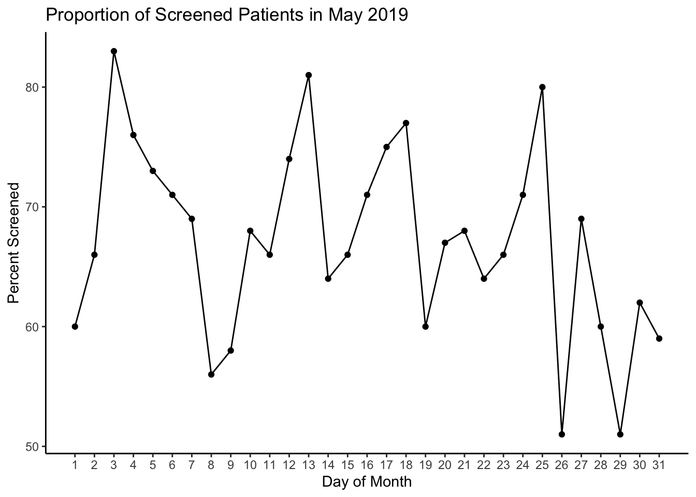

dashboard_cleaned = read.csv("~/Desktop/Practicum Project/practicum_project/dashpractproj.github.io/dashboard.csv") %>%
# changing the dataset into a tidyverse table from base R
as.tibble() %>%
# separating the contact_date into date_ct and time_ct for better manipulation
separate(contact_date, c("date_ct", "time_ct"), sep = " ") %>%
# changing the newly created date_ct into right format and naming it "dat"
mutate(
dat = mdy(date_ct), #converting it into "Y-m-d" format
day_of_week = wday(dat, 1), # isolating the actual 'day' from 'dat' variable = 'day_of_week'
month_of_year = month(dat), # creating hte month variable
month_of_year = as.factor(month_of_year) # changing it into a factor
) %>%
# selecting only the variables I need. Originally, I had included the "hosp_admsn_time" variable but removed it (not needed)
select(csn, day_of_week, month_of_year, dat)## Warning: `as.tibble()` was deprecated in tibble 2.0.0.
## Please use `as_tibble()` instead.
## The signature and semantics have changed, see `?as_tibble`.## Warning: Expected 2 pieces. Missing pieces filled with `NA` in 5464 rows [60716,
## 60717, 60718, 60719, 60720, 60721, 60722, 60723, 60724, 60725, 60726, 60727,
## 60728, 60729, 60730, 60731, 60732, 60733, 60734, 60735, ...].ED.Visits.2019 <- read.csv("~/Desktop/HI7090/ED Visits 2019.csv") %>%
dplyr::select("PAT_ENC_CSN_ID", "PAT_MRN_ID", "LOC_NAME", "HOSP_ADMSN_TIME","CONTACT_DATE", "BIRTH_DATE", "AGE", "RACE", "ETHNIC_GROUP", "SEX","VISIT_FIN_CLASS", "ICD_LIST")
UH_Main_Hospital = ED.Visits.2019 %>%
filter(LOC_NAME == "UH MAIN HOSPITAL")
EDdashboard = UH_Main_Hospital %>%
as.tibble() %>%
janitor::clean_names() %>%
rename(csn = pat_enc_csn_id) %>%
dplyr::select(csn, hosp_admsn_time, contact_date)
# Getting rid of duplicates in the EPIC dataset only containing the "csn" variable
cleaned_dashboard = EDdashboard[!duplicated(EDdashboard[1]),]# bar plot showing the day_of_week traffic in the ED
dashboard_cleaned %>%
count(day_of_week) %>%
mutate(
day_of_week = as.factor(day_of_week),
day_of_week = fct_reorder(day_of_week, n)) %>%
plot_ly(x = ~day_of_week, y = ~n, color = ~day_of_week, type = "bar") %>%
layout(title = 'ED Visits by day of the week',
xaxis = list(title = 'Day_of_Week',
zeroline = TRUE,
range = c(-1, 7)),
yaxis = list(title = 'Count',
range = c(0,12000)))# Bar plot showing the month_of_year ED traffic/ highest number of ED visits
dashboard_cleaned %>%
count(month_of_year) %>%
mutate(
month_of_year = as.factor(month_of_year),
month_of_year = fct_reorder(month_of_year, n)) %>%
plot_ly(x = ~month_of_year, y = ~n, color = ~month_of_year, type = "bar") %>%
layout(title = 'Monthly ED visits',
xaxis = list(title = 'Month_of_year',
zeroline = TRUE,
range = c(-1, 12)),
yaxis = list(title = 'Count',
range = c(0,7000)))## Warning in RColorBrewer::brewer.pal(N, "Set2"): n too large, allowed maximum for palette Set2 is 8
## Returning the palette you asked for with that many colors
## Warning in RColorBrewer::brewer.pal(N, "Set2"): n too large, allowed maximum for palette Set2 is 8
## Returning the palette you asked for with that many colors# loading the screened dataset
scr_df = read_csv("~/Desktop/Practicum Project/practicum_project/dashpractproj.github.io/dash_screened.csv") %>%
janitor::clean_names() %>%
select(-x1)## Warning: Missing column names filled in: 'X1' [1]##
## ── Column specification ────────────────────────────────────────────────────────
## cols(
## X1 = col_double(),
## age = col_double(),
## csn = col_double(),
## sex = col_character(),
## race = col_character(),
## mrn = col_double(),
## screen_group = col_character()
## )# join the "screened" dataset with dashboard_cleaned
props_df = inner_join(dashboard_cleaned, scr_df, by = "csn")
# Working with month of May(most ED traffic) to see trend/proportion of approached (using Basic ggplot)
props_df %>%
filter(month_of_year == "5") %>%
mutate(
day_of_month = day(dat)
) %>%
dplyr::select(csn, day_of_month, month_of_year, screen_group) %>%
group_by(day_of_month, screen_group) %>%
summarise(
cnt = n()
) %>%
pivot_wider(
names_from = "screen_group",
values_from = "cnt"
) %>%
mutate(
total_count = `not screened` + `screened`,
`percent_screened (%)` = round(100*(`screened` / total_count))
) %>%
ggplot(aes(x = day_of_month, y = `percent_screened (%)`)) +
geom_point() +
geom_line() +
scale_x_continuous(breaks = c(1:31)) +
theme_classic() +
labs(
title = "Proportion of Screened Patients in May 2019",
x = "Day of Month",
y = "Percent Screened"
)## `summarise()` has grouped output by 'day_of_month'. You can override using the `.groups` argument.
#Importing new dataset (CRC2019)
crc_may_2019 = read_csv("~/Desktop/Practicum Project/practicum_project/dashpractproj.github.io/May 2019 CRCs .csv", skip = 2) %>%
janitor::clean_names() %>%
dplyr::mutate(
day_of_month = mdy(date),
day_of_month = mday(day_of_month)
) %>%
dplyr::select(-date)##
## ── Column specification ────────────────────────────────────────────────────────
## cols(
## Date = col_character(),
## `Number of CRCs` = col_double()
## )# plotting with Plotly for the month of May
patient_screened_percent = props_df %>%
filter(month_of_year == "5") %>%
mutate(
day_of_month = day(dat)
) %>%
dplyr::select(csn, day_of_month, month_of_year, screen_group) %>%
group_by(day_of_month, screen_group) %>%
summarise(
cnt = n()
) %>%
pivot_wider(
names_from = "screen_group",
values_from = "cnt"
) %>%
mutate(
total_count = `not screened` + `screened`,
`percent_screened (%)` = round(100*(`screened` / total_count))
) %>%
dplyr::select(day_of_month, `percent_screened (%)`)## `summarise()` has grouped output by 'day_of_month'. You can override using the `.groups` argument.#Joining number of patients screened with CRC on staff in May
df = inner_join(patient_screened_percent, crc_may_2019, by = "day_of_month")
df %>%
ungroup() %>%
plot_ly(x = ~day_of_month, y = ~`percent_screened (%)`,
color = ~day_of_month, type = "scatter", mode = "lines", name = "Number of Screened Pts") %>%
add_trace(x = ~day_of_month, y = ~number_of_cr_cs, color = ~day_of_month,
type = "scatter", mode = "lines", yaxis = "y2", name = "Number of CRCs") %>%
layout(yaxis2 = list(overlaying = "y", side = "right")) %>%
layout(title = 'Daily proportion of screened patients and Number of CRCs on duty',
xaxis = list(title = 'Day_of_Month',
zeroline = TRUE,
range = c(0, 31)),
yaxis = list(title = 'Percent_screened (%)',
range = c(0,100)))## Warning: line.color doesn't (yet) support data arrays
## Warning: line.color doesn't (yet) support data arrays
## Warning: line.color doesn't (yet) support data arrays
## Warning: line.color doesn't (yet) support data arrays